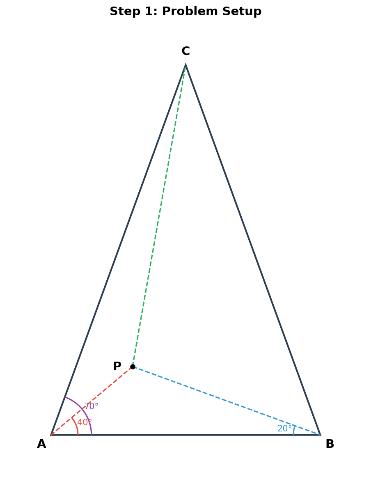
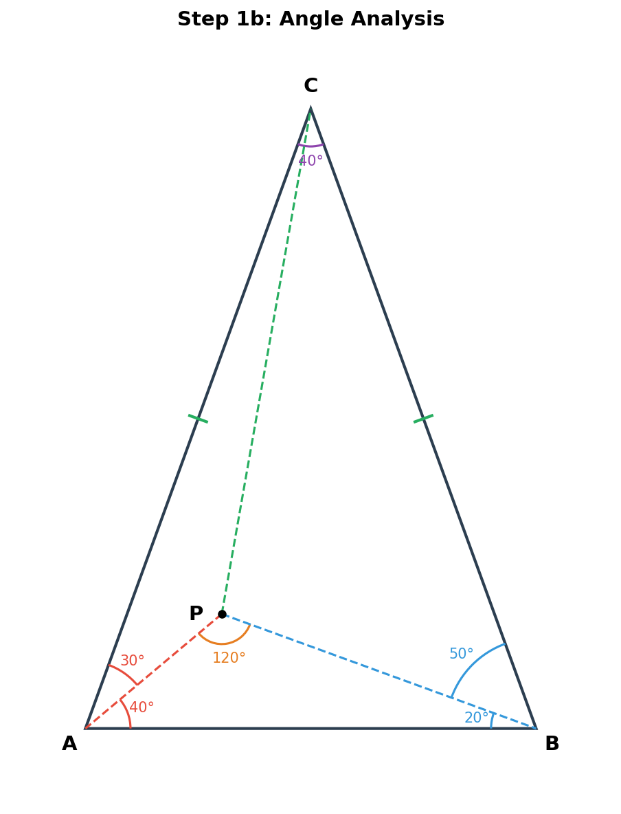
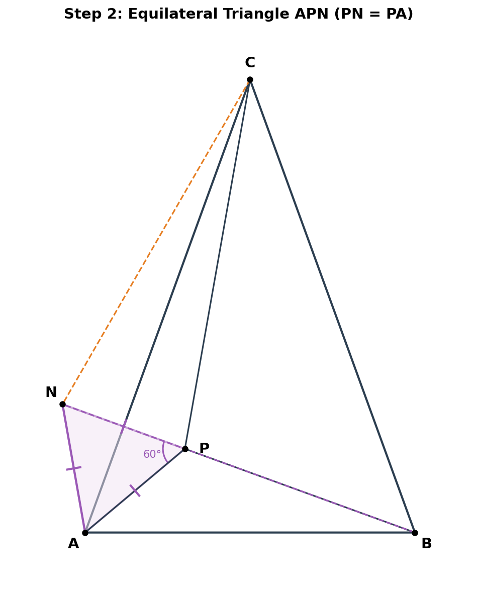
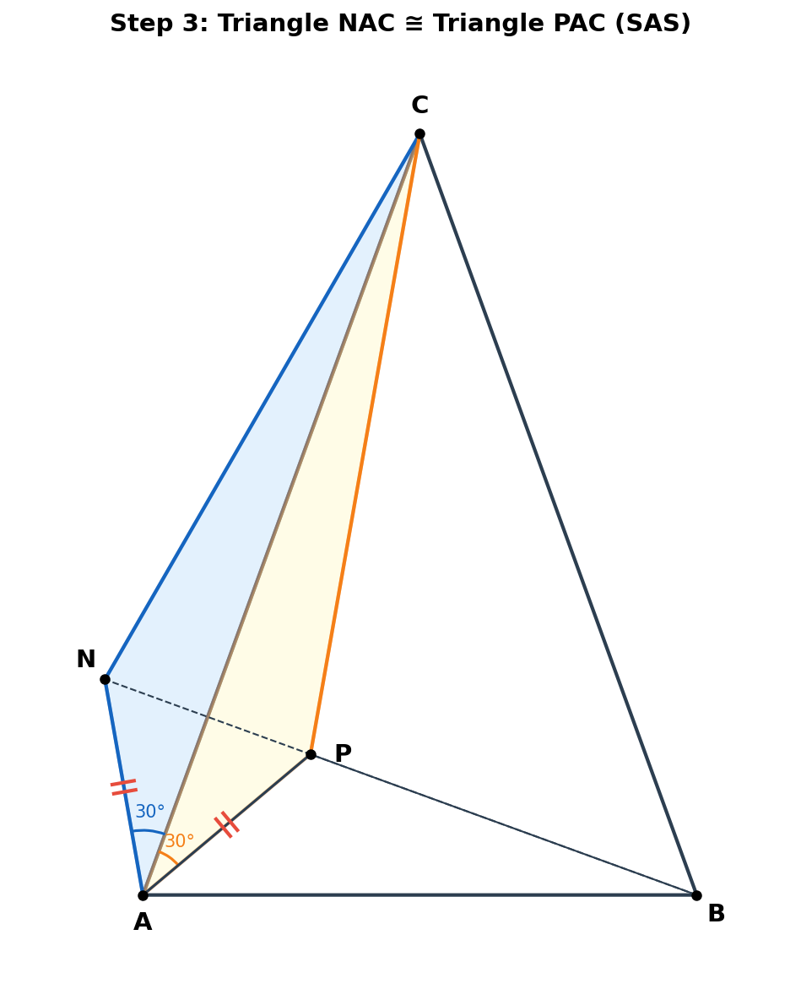
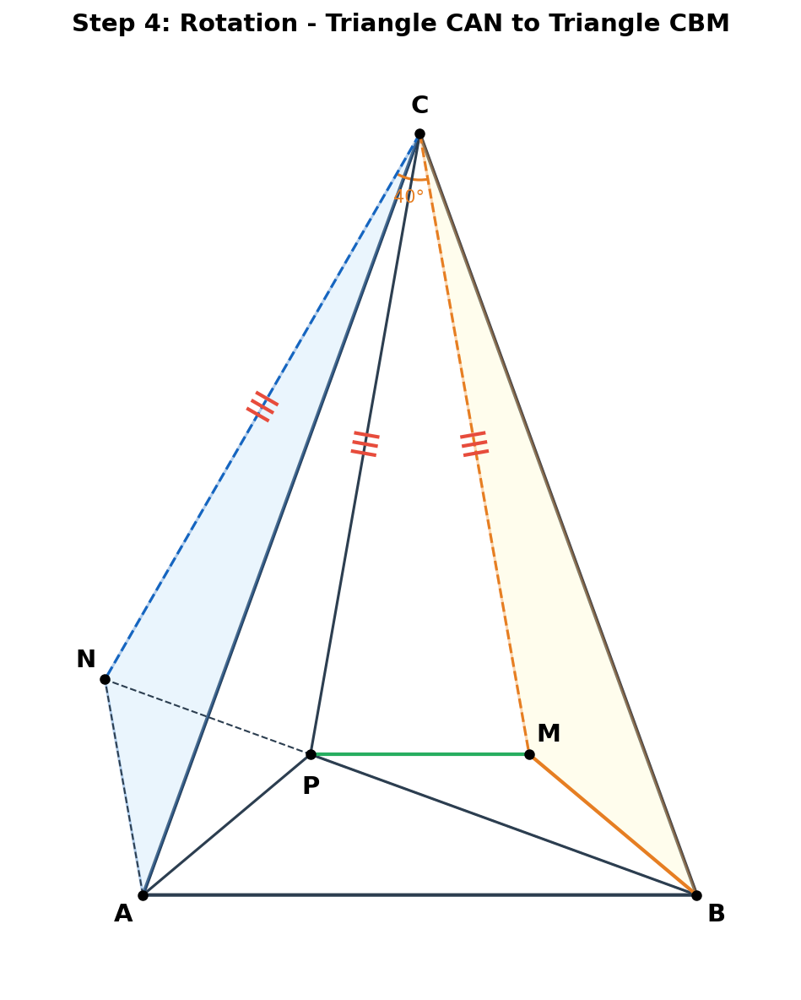
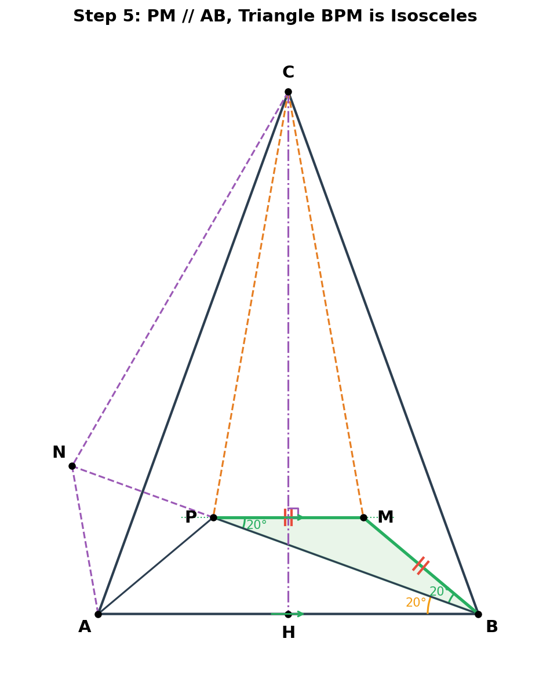
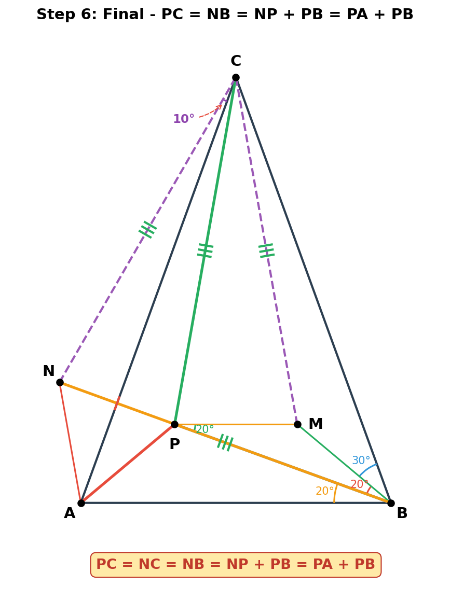

1
题目
在△ABC中，∠ABC = ∠BAC = 70°，点P为三角形内一点，∠PAB = 40°，∠PBA = 20°，求证：PA + PB = PC。

💭 思考问题
?
这个三角形有什么特殊性质？
✓ ∠ABC = ∠BAC = 70°，所以AC = BC，△ABC是等腰三角形，∠ACB = 40°。
?
PA + PB = PC 这种等式暗示了什么构造？
? 如果能找到一条线段等于PC，且能分成PA和PB两段，就能证明结论。可以考虑在BP延长线上取点构造。
2
角度分析
🔑 关键发现：利用三角形内角和与已知角度，计算所有相关角度。

∠ACB = 40°
∠PAC = 30°
∠PBC = 50°
∠APB = 120°
AC = BC
推导过程：
- ① ∠ACB = 180° - 70° - 70° = 40°
- ② AC = BC（等角对等边）
- ③ ∠PAC = ∠BAC - ∠PAB = 70° - 40° = 30°
- ④ ∠PBC = ∠ABC - ∠PBA = 70° - 20° = 50°
- ⑤ ∠APB = 180° - 40° - 20° = 120°
3
辅助构造：等边三角形APN
🔑 关键构造：在BP延长线上取点N，使PN = PA。

推理过程：
- ① 在BP延长线上取N，使PN = PA
- ② ∠APN = 180° - ∠APB = 180° - 120° = 60°
- ③ PA = PN 且 ∠APN = 60° → △APN是等边三角形
- ④ 所以 AN = PA = PN
∴ △APN是等边三角形，三边相等
💭 思考问题
?
为什么选择在BP延长线上构造？
✓ 因为要证PA + PB = PC，如果在BP延长线上取N使PN = PA，则NB = NP + PB = PA + PB，只需证NB = PC即可。
?
如何判断△APN是等边三角形？
✓ 有两条边相等（PA = PN），且夹角为60°（∠APN = 60°）。等腰三角形中，如果顶角为60°，则三个角都是60°，即为等边三角形。
4
证明 △NAC ≅ △PAC

比较△NAC和△PAC：
- ① ∠NAC = ∠NAP - ∠PAC = 60° - 30° = 30° ✓
- ② ∠PAC = 30° ✓ → ∠NAC = ∠PAC
- ③ AN = AP（等边三角形三边相等）✓
- ④ AC = AC（公共边）✓
∴ △NAC ≅ △PAC（SAS），所以 NC = PC，∠NCA = ∠PCA
重要结论：CA平分∠NCP，即∠NCA = ∠PCA。
5
旋转构造：△CAN → △CBM
🔑 关键操作：将△CAN绕C逆时针旋转40°（= ∠ACB），使A对应B，N对应M。

旋转推理：
- ① 旋转角 = ∠ACB = 40°，A→B，N→M
- ② CM = CN = CP（旋转保持长度 + 第4步结论）
- ③ ∠BCM = ∠ACN（旋转对应角）
- ④ ∠ACP = ∠ACN = ∠BCM（第4步：∠NCA = ∠PCA）
- ⑤ CA = CB，CP = CM，∠ACP = ∠BCM
∴ △CAP ≅ △CBM（SAS），所以 BM = AP = PN
💭 思考问题
?
为什么旋转角度恰好是∠ACB？
✓ 因为CA = CB（等腰三角形），旋转∠ACB能把CA映到CB，从而利用对称性建立新的全等关系。
6
证明 PM // AB

推理过程：
- ① 过C作CH⊥AB于H，则∠ACH = ∠BCH = 20°（等腰三角形性质）
- ② 因为∠ACP = ∠BCM，所以∠PCH = ∠MCH
- ③ CH平分∠PCM，且CP = CM → △PCM是等腰三角形
- ④ 等腰三角形中，顶角平分线⊥底边 → CH⊥PM
- ⑤ CH⊥AB 且 CH⊥PM → PM // AB
∴ PM // AB
7
证明 PM = BM（等腰三角形BPM）
角度推导：
- ① 由旋转△CAN→△CBM：∠MBC = ∠NAC = 30°
- ② ∠MBA = ∠ABC - ∠MBC = 70° - 30° = 40°
- ③ ∠MBP = ∠MBA - ∠PBA = 40° - 20° = 20°
- ④ PM // AB → ∠MPB = ∠PBA = 20°（内错角）
- ⑤ ∠MBP = ∠MPB = 20° → PM = BM
∴ PM = BM = AP = PN
关键链条：PM = BM（等腰△BPM）= AP（△CAP≅△CBM）= PN（等边△APN）
8
最终结论：PC = PA + PB

最终推理：
- ① CP = CN = CM 且 PN = PM → △NCP ≅ △MCP（SSS）
- ② 所以∠NCP = ∠MCP
- ③ ∠NCA = (1/2)∠NCP = (1/4)∠NCM = (1/4)×40° = 10°
- ④ ∠NCB = ∠NCA + ∠ACB = 10° + 40° = 50°
- ⑤ ∠NBC = ∠PBC = 50°（N在BP延长线上）
- ⑥ ∠NCB = ∠NBC = 50° → NB = NC
完整等式链：
PC = NC = NB = NP + PB = PA + PB
证毕 ■
★
解题思路总结
🎯 最终答案
PA + PB = PC 证毕
📋 解题流程
1
计算角度：∠ACB=40°, ∠PAC=30°, ∠APB=120°
2
BP延长线取N使PN=PA → 构造等边△APN
3
证△NAC≅△PAC(SAS) → NC=PC
4
旋转△CAN → △CBM, 证△CAP≅△CBM → BM=AP
5
利用CH⊥AB证PM//AB → ∠MPB=20°
6
△BPM等腰 → PM=BM=AP=PN
7
△NCP≅△MCP → ∠NCB=∠NBC=50° → NB=NC=PC
🏷️ 涉及知识点
等腰三角形性质
等边三角形构造
SAS全等
SSS全等
旋转变换
平行线内错角
💡 解题技巧
- • 延长线取点法：证明线段和等式 a+b=c 时，在一条线段延长线上截取，将问题转化为证明两段相等
- • 等边三角形构造：当出现60°角或120°（补角）时，考虑构造等边三角形
- • 旋转法：当有等腰三角形时，绕顶点旋转可以产生新的全等关系
- • 等量代换链：通过多步全等建立等式链 PM=BM=AP=PN，最终串联结论